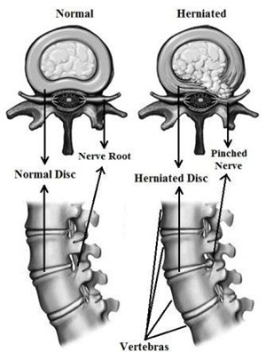
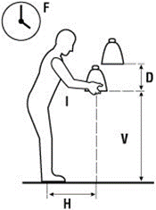

Manutention manuelle
La manutention désigne le transport ou le soutien d'une charge nécessitant un effort physique (soulever, porter, pousser, tirer). Elle est considérée comme présente si la charge fait au moins 3 kg. C'est l'activité de travail la plus fortement associée au risque de TMS lombaires : 56 % des TMS sont reliés à la manutention, dont 25 % causés par un effort excessif en soulevant. Le dos est le siège de lésion dans 65,7 % des cas.
Table des matières
- Définition
- Statistiques et lésions
- Biomécanique de la manutention
- Équation NIOSH
- Stratégies de prévention
- Cadre réglementaire
- Application terrain
- Ressources
Définition
Selon l'IRSST (2016), la manutention désigne le transport ou le soutien d'une charge nécessitant un effort physique d'une ou plusieurs personnes. Selon l'INSPQ (2021), la manutention est considérée comme présente si les travailleurs soulèvent ou transportent une charge d'au moins 3 kg.
L'effort peut être fourni pour
- Soulever.
- Porter.
- Pousser.
- Tirer.
Statistiques et lésions
| Indicateur | Valeur |
|---|---|
| Employés manipulant des charges | 4 sur 10 |
| Employés manipulant ≥ 2 h / semaine | 3 sur 10 |
| TMS reliés à la manutention | 56 % |
| TMS causés par effort excessif en soulevant | 25 % |
| Siège de lésion le plus fréquent (dos) | 65,7 % |
| Durée moyenne d'absence (TMS de manutention) | 88 jours |
TMS associés
- Entorses et déchirures musculaires : 90,6 %.
- Lombalgies : 2,7 %.
- Hernies discales : 0,8 %.
Parmi les TMS de manutention indemnisés par la CNESST, 82,1 % seraient causés par un effort excessif, surtout lors d'un soulèvement.

Biomécanique de la manutention
Voir Biomécanique et Anatomie et biomécanique du dos pour les fondements.
Le tronc agit comme une balance pivotant à L5-S1. Le maintien postural requiert
- Stabilisation constante du centre de gravité.
- Contractions des extenseurs et fléchisseurs du tronc.
Lorsqu'une charge est ajoutée
- ↑ charge = ↑ contraction = ↑ pression intervertébrale.


Technique inappropriée (dos rond, charge éloignée)
- Diminue les courbures de la colonne.
- Mauvaise distribution des forces compressives.
- Stress important sur les ligaments et muscles profonds.
- Particulièrement problématique pour les charges au sol et chez les travailleurs avec faiblesse des membres inférieurs.

Asymétrie
- Distribution asymétrique (manutention unilatérale) augmente la force de contraction.
- Rotation et torsion limitent la capacité d'amortissement des disques.

Équation NIOSH
L'équation de levée de charges du NIOSH estime la charge maximale admissible pour des activités de manutention.
Indice de manutention
Indice = Charge manipulée / Charge maximale admissible.
| Indice | Interprétation |
|---|---|
| ≤ 1 | Tâche acceptable |
| Entre 1 et 2 | Modification du poste recommandée |
| ≥ 2 | Modification absolument nécessaire |
Six facteurs de l'équation
- H : distance horizontale entre les chevilles et les mains lors de la prise.
- V : hauteur de départ des mains.
- D : déplacement vertical de l'objet.
- F : fréquence des manutentions.
- A : asymétrie de la charge.
- C : qualité de la prise (poignées, type de prise).

Calculateur WISHA
Développé à partir de l'équation NIOSH, plus accessible.
- Estime la charge maximale admissible selon l'emplacement des mains, la fréquence et la durée.
- Disponible en ligne (Oregon OSHA).
- Indice résultant : < 1 risque faible, 1 à 1,5 risque moyen, > 1,5 risque élevé.
Stratégies de prévention
Environnement physique et outils
- Fournir des dispositifs d'aide à la manutention (chariots, palans, ponts).
- Favoriser le transport par glissement.
- Adapter hauteur (75 cm) et distance des objets lors de la prise et du dépôt.
- Réduire la distance à parcourir avec la charge.
- Limiter les rotations et torsions du tronc.
L'objet
- Alléger l'objet à porter.
- Optimiser le volume (limiter asymétrie et bras de levier).
- Réduire l'instabilité (augmente effort musculaire et risque d'accident).
- Améliorer la prise (poignées, forme).
Organisation du travail
- Réduire durée et fréquence d'exposition.
- Favoriser la collaboration à deux pour les charges élevées.
- Pauses programmées.
- Rotation des tâches.
Travailleurs et travailleuses
- Formation appropriée (technique, planification du mouvement).
- Promotion de la condition physique.
- Prise en compte des facteurs individuels (âge, état physique, expérience).
Principes de la technique
Au-delà du raccourci "pliez les genoux et gardez le dos droit"
- Réduction du chargement initial (bras de levier court, flexion du tronc minimale).
- Répartition du chargement (positionnement, courbures naturelles, exploitation des grosses masses musculaires).
- Stabilisation travailleur-charge (équilibre corporel, contrôle de la charge).
- Continuation du mouvement (transition, fluidité).
- Mise à profit des ressources (vitesse, surfaces d'appui).
Cadre réglementaire
Règlement canadien sur la santé et la sécurité au travail, art. 14.48
L'employeur doit donner à tout employé qui doit soulever ou transporter manuellement une charge de plus de 10 kg des consignes et une formation sur
- La façon de soulever et transporter en sécurité, en minimisant l'effort.
- Les techniques adaptées à l'état physique et aux conditions du lieu.
Au Québec, la LSST et le RSST encadrent la manutention via les obligations générales de l'employeur. Voir aussi le wiki Droit du travail.
Application terrain
La manutention est omniprésente en mine, malgré la mécanisation.
Risques aggravants en mine
- Sol inégal et instable (perte d'équilibre).
- Espaces restreints (impossibilité d'utiliser la bonne technique).
- Vibrations cumulées si manutention suivant un quart de conduite (voir Vibrations).
- Cadences imposées par le cycle de forage-sautage.
- Travail en hauteur (échelles, plateformes).
Stratégies adaptées en mine
- Mécanisation maximale (palans souterrains, plateformes hydrauliques, chariots).
- Sacs d'explosifs et boulons reconditionnés en plus petites quantités.
- Standardisation des hauteurs de prise dans les aires de chargement.
- Programme de formation continue à la manutention en chantier réel.
- Surveillance des plaintes lombaires par questionnaire nordique.
Ressources
| Document | Type | Source |
|---|---|---|
| Cours SST 1162 - S4 - Manutention | Cours | UQAT |
| Guide INSPQ d'évaluation des contraintes | Guide | INSPQ 2021 |
| Équation NIOSH révisée | Norme | NIOSH 1994 |
| Calculateur WISHA | Outil | Oregon OSHA |
| Règlement canadien SST art. 14.48 | Loi | Canada |
| Denis et al., Manutention sécuritaire | Guide | IRSST |
Articles wiki connexes
Pages qui pointent ici (21)
- 00 - 🏠 Accueil Ergonomie
- 30 - Glossaire Ergonomie
- Analyse Denis (2019) SST psychosociale
- Analyse IRSST (2016) SST psychosociale
- Analyse Snook et Ciriello (1991) SST psychosociale
- Anatomie et biomécanique du dos Ergonomie
- art-166-RSST, posture assise Ergonomie
- art-167-RSST, siège ergonomique Ergonomie
- Biomécanique Ergonomie
- Contraintes Ergonomie
- Démarrage rapide - Superviseur Ergonomie
- Domaines de l'ergonomie Ergonomie
- Ergonomie du travail Ergonomie
- Évaluation des risques de TMS Ergonomie
- Outils d'évaluation ergonomique Ergonomie
- Postures contraignantes Ergonomie
- Programme de prévention TMS Ergonomie
- Programme manutention Ergonomie
- TMS (troubles musculosquelettiques) Ergonomie
- TMS par région anatomique Ergonomie
- Vibrations Ergonomie